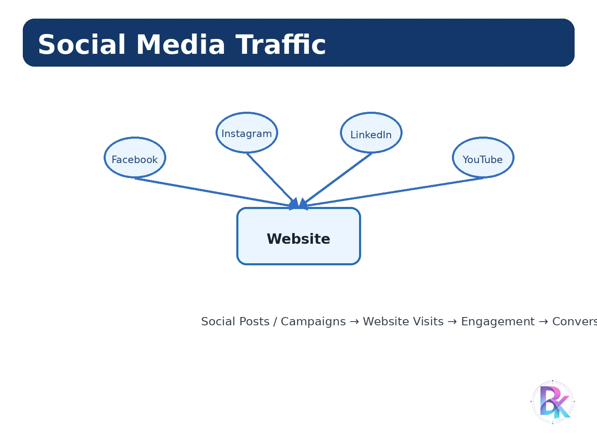

Google Analytics
Getting Started with Google Analytics
Google Analytics एक Web Analytics Service है, जिसका उपयोग Website या Application पर आने वाले Users के Behavior, Traffic Sources, Engagement तथा Conversions को Measure और Analyze करने के लिए किया जाता है।
Website Owner केवल Website बना लेने से यह नहीं जान सकता कि उसकी Website कितने लोग देख रहे हैं, Visitors कहाँ से आ रहे हैं, कौन-से Pages सबसे अधिक देखे जा रहे हैं, Users कितनी देर Website पर रह रहे हैं या कितने Users किसी Product को Purchase, Form Submit अथवा Registration जैसे desired actions को Complete कर रहे हैं।
Google Analytics इन सभी Activities से Related Data को Collect और Report करने में सहायता करता है। इस Data का Analysis करके Website Owner अपनी Website, Content और Digital Marketing Strategy में आवश्यक Improvements कर सकता है। GFG के अनुसार Analytics Website Visitors के Behavior, Traffic Sources और Performance को समझने के लिए उपयोगी है। :contentReference[oaicite:1]{index=1}
Definition
Definition:
"Google Analytics एक Web Analytics Tool है जो Website या
App के Users, Traffic, Engagement, Content Performance और
Conversions से Related Data को Collect, Measure और Analyze
करने में सहायता करता है।"
Google Analytics का मुख्य उद्देश्य Website के Users और उनके Behavior को समझना तथा Data के आधार पर Website और Marketing Performance को Improve करना है।
Why Google Analytics is Used?
- Website पर आने वाले Users की संख्या जानने के लिए।
- Users कहाँ से Website पर आ रहे हैं यह जानने के लिए।
- Popular Pages और Content Identify करने के लिए।
- User Engagement Measure करने के लिए।
- Conversions Track करने के लिए।
- Marketing Campaigns की Performance Analyze करने के लिए।
- Website की Weak Areas Identify करने के लिए।
- Data-based Business Decisions लेने के लिए।
Basic Working of Google Analytics
Important Analytics Terms
| Term | Meaning |
|---|---|
| Users | Website या App के Users से Related संख्या। |
| Sessions | Website पर User Visits से Related Measurement। |
| Events | User द्वारा की गई Specific Interactions। |
| Engagement | Users का Website Content के साथ Interaction। |
| Conversions | Business के लिए Important Desired Actions। |
| Traffic Source | Website पर User किस Source से आया। |
Understanding Google Analytics Dashboard
Google Analytics Dashboard Website या App के important performance data को एक स्थान पर देखने और समझने में सहायता करता है।
आपके syllabus में Dashboard को मुख्य रूप से Audience, Advertising, Traffic Source, Content और Conversions के आधार पर समझाया गया है। Current Google Analytics 4 (GA4) interface में Reports, Explore और Advertising जैसे sections दिखाई दे सकते हैं, इसलिए पुराने syllabus के labels और current interface में कुछ difference हो सकता है।
Exam में syllabus के अनुसार Audience | Advertising | Traffic Source | Content | Conversions headings लिखें। Practical GA4 में इनके concepts अलग-अलग reports, explorations और dimensions/metrics में दिखाई दे सकते हैं।
1. Audience
Audience section का उद्देश्य Website पर आने वाले Users के बारे में Information समझना है। इसमें Users की Location, Device, Technology और अन्य characteristics से Related Data का Analysis किया जा सकता है।
- Users किस Country या City से आते हैं।
- Users Mobile, Tablet या Desktop में से किस Device का उपयोग करते हैं।
- New और Returning Users को समझना।
- Audience के Behavior और Engagement को Analyze करना।
2. Advertising
Advertising से Related Reports का उपयोग Advertising Campaigns की Performance और उनके Results को Analyze करने के लिए किया जा सकता है।
इससे Advertiser यह समझ सकता है कि अलग-अलग Campaigns से कितने Users आए और उनके द्वारा कौन-से valuable actions किए गए।
3. Traffic Source
Traffic Source यह बताता है कि Users Website तक किस माध्यम से पहुँचे।
| Traffic Source | Meaning |
|---|---|
| Organic Search | Search Engine से आने वाला Traffic। |
| Direct | Direct Visit या identifiable referral के बिना आने वाला Traffic। |
| Referral | किसी दूसरी Website के Link से आने वाला Traffic। |
| Social | Social Media Platforms से आने वाला Traffic। |
| Paid | Paid Advertising Campaigns से आने वाला Traffic। |
4. Content
Content Reports Website के Pages और Content की Performance को समझने में सहायता करते हैं।
- कौन-से Pages अधिक देखे जा रहे हैं।
- कौन-से Landing Pages Users को आकर्षित कर रहे हैं।
- कौन-से Pages पर Users अधिक Engagement कर रहे हैं।
- कौन-से Pages से Users Website छोड़ रहे हैं।
5. Conversions
Conversions उन Important Actions को कहते हैं जो Website के Business Objective को पूरा करते हैं। उदाहरण के लिए Purchase, Registration, Lead Form Submission, Subscription या किसी Important Button पर Action।
यदि किसी Online Store का Goal Product Sale है, तो successful purchase एक महत्वपूर्ण Conversion हो सकता है।
Taking Decisions Based on Analytics Reporting
Google Analytics का सबसे महत्वपूर्ण उपयोग केवल Reports देखना नहीं बल्कि उन Reports से meaningful Information निकालकर Data-driven Decisions लेना है।
यदि Website Owner को पता चलता है कि किसी Page पर बहुत अधिक Visitors आ रहे हैं लेकिन Users desired action Complete नहीं कर रहे, तो वह Page Content, CTA, Navigation या User Experience में Improvement कर सकता है।
Decision Making Process
- Business Question Identify करें।
- Relevant Analytics Report Select करें।
- Important Metrics और Dimensions देखें।
- Data में Trends और Patterns Identify करें।
- Problem या Opportunity Identify करें।
- Possible Improvement Plan करें।
- Changes Implement करें।
- बाद में Analytics Data से Result Compare करें।
Example
मान लीजिए Analytics Report दिखाती है कि Website का Mobile Traffic बहुत अधिक है लेकिन Mobile Users का Engagement कम है।
ऐसी स्थिति में Website Owner Mobile Layout, Page Speed, Font Size, Navigation और Buttons को Check करके सुधार कर सकता है।
Analytics Reporting का उद्देश्य Data को देखकर सही Business Decisions लेना और Website Performance को लगातार Improve करना है।
Defining Business Goals and Objectives
Analytics का सही उपयोग तभी संभव है जब Website के Business Goals और Objectives पहले से Clearly Defined हों।
Business Goal एक broad result होता है जिसे Organization प्राप्त करना चाहती है, जबकि Objective उस Goal को प्राप्त करने के लिए निर्धारित Specific और measurable target हो सकता है।
Common Website Business Goals
- Online Sales बढ़ाना।
- Lead Generation बढ़ाना।
- New Users प्राप्त करना।
- Brand Awareness बढ़ाना।
- Customer Engagement Improve करना।
- Course Registration बढ़ाना।
- Product Downloads बढ़ाना।
- Subscription बढ़ाना।
Example
| Business Goal | Possible Objective |
|---|---|
| Increase Sales | Online Purchases बढ़ाना। |
| Generate Leads | Contact Form Submissions बढ़ाना। |
| Improve Engagement | Content Interaction बढ़ाना। |
| Increase Awareness | Relevant Website Traffic बढ़ाना। |
Goal स्पष्ट होने पर ही यह तय करना आसान होता है कि कौन-से Metrics और Conversions को Track करना चाहिए।
Tracking SEO Traffic
Search Engine से बिना Direct Advertisement के Website पर आने वाले Traffic को सामान्यतः Organic Search Traffic कहा जाता है।
SEO Traffic को Analyze करके Website Owner यह समझ सकता है कि Search Engines से Users कितने आ रहे हैं, कौन-से Landing Pages उन्हें attract कर रहे हैं और Organic Traffic से कौन-से meaningful actions प्राप्त हो रहे हैं।
Important SEO Traffic Information
- Organic Users
- Organic Sessions / Visits
- Landing Pages
- Engagement
- Conversions
- Geographic Performance
- Device Performance
GFG के अनुसार Organic Search Traffic Search Engines जैसे Google या Bing के माध्यम से Website को Discover करने वाले Visitors को represent करता है और Organic Traffic का Analysis SEO Performance समझने में सहायता करता है। :contentReference[oaicite:3]{index=3}
SEO Traffic Tracking से यह पता लगाया जा सकता है कि Search Engine Optimization के कारण Website तक किस प्रकार के Users पहुँच रहे हैं और वे Website पर क्या कर रहे हैं।
Integrating Google AdWords Campaigns into Google Analytics
Google Ads Campaigns को Google Analytics के साथ Integrate करने का उद्देश्य Advertising और Website Performance Data को एक साथ Analyze करना है।
Integration के बाद Advertiser Campaign से आने वाले Users, Engagement और Conversions जैसी Information को बेहतर तरीके से Analyze कर सकता है।
Benefits
- Paid Campaign Traffic को Analyze करना।
- Campaign Performance Compare करना।
- Landing Page Performance समझना।
- Conversions को Campaign से Relate करना।
- Advertising Budget की Effectiveness Analyze करना।
- Better Marketing Decisions लेना।
Basic Integration Concept
Google Ads और Google Analytics Integration से Advertiser Advertisement से Website तक आने वाले User Journey और Campaign Performance को बेहतर ढंग से Analyze कर सकता है।
Measuring Tools and Methods
Website Performance को Measure करने के लिए अलग-अलग Metrics, Dimensions, Events, Reports और Tracking Methods का उपयोग किया जाता है।
Metrics
Metrics Numeric Measurements होते हैं जो बताते हैं कि किसी Activity की मात्रा कितनी है।
| Metric | Meaning |
|---|---|
| Users | Users की संख्या से Related Measurement। |
| Sessions | Visits / Sessions से Related Measurement। |
| Event Count | Tracked Events की संख्या। |
| Engagement Rate | Engaged Sessions का अनुपात। |
| Conversions | Completed Important Actions। |
| Total Revenue | Tracked Revenue का Measurement। |
Dimensions
Dimensions Data को Categorize या Describe करने वाले Attributes होते हैं। उदाहरण के लिए Country, Device, Page Title या Traffic Source।
GFG के अनुसार Metrics actual measurable numbers होते हैं, जबकि Dimensions Data को Context और Category प्रदान करते हैं। :contentReference[oaicite:4]{index=4}
Events
Events Users द्वारा Website या App पर की गई Specific Interactions को Track करने के लिए उपयोग किए जाते हैं। उदाहरण के लिए Button Click, Video Play या File Download। :contentReference[oaicite:5]{index=5}
Measuring Your Site's ROI
ROI (Return on Investment) एक महत्वपूर्ण Business Measurement है जो यह समझने में सहायता करता है कि किसी Investment के मुकाबले कितना Return प्राप्त हुआ।
Website के context में ROI को Advertising Cost, Website Development Cost, Marketing Cost और प्राप्त Revenue या Business Value के आधार पर Analyze किया जा सकता है।
Basic ROI Formula
Example
मान लीजिए किसी Business ने Online Advertising पर ₹20,000 खर्च किए और Campaign से ₹60,000 का Revenue प्राप्त हुआ।
तब Investment और Return को Compare करके Campaign की Financial Performance Analyze की जा सकती है।
Why ROI is Important?
- Marketing Investment की Effectiveness जानने के लिए।
- Profitable और Non-profitable Campaigns Identify करने के लिए।
- Advertising Budget को सही जगह Allocate करने के लिए।
- Business Growth के लिए बेहतर Decisions लेने के लिए।
Introduction to Goal Conversion
Conversion का अर्थ है User द्वारा Website पर ऐसा Desired Action Complete करना जो Business के लिए महत्वपूर्ण है।
उदाहरण के लिए Online Store में Purchase, Educational Website में Registration, Business Website में Lead Form Submission या Newsletter Subscription एक Conversion हो सकता है।
Examples of Conversions
- Product Purchase
- Registration
- Lead Form Submission
- Newsletter Subscription
- File Download
- Important Button Click
- Course Enrollment
- Contact Request
Goal Conversion Tracking
Conversion Tracking का उद्देश्य यह जानना है कि कितने Users ने Defined Business Objective को Complete किया और कौन-से Traffic Sources या Campaigns इन Conversions में योगदान दे रहे हैं।
Current GA4 में Conversion के लिए महत्वपूर्ण Events को conversion/key event के रूप में configure किया जा सकता है। इसलिए पुराने Universal Analytics के "Goals" terminology और current GA4 terminology में practical difference हो सकता है।
Tracking the Conversions
Conversion Tracking Website के Important User Actions को Measure करने की प्रक्रिया है। इसका उपयोग यह पता लगाने के लिए किया जाता है कि Website, Marketing Campaign या Traffic Source कितनी अच्छी तरह Business Results Generate कर रहा है।
Basic Conversion Tracking Process
- Business Goal Define करें।
- Desired User Action Identify करें।
- Relevant Event Create या Configure करें।
- Important Event को Conversion / Key Event के रूप में Mark करें।
- Data Collection Verify करें।
- Reports में Conversion Data Analyze करें।
- Traffic Source और Campaign Performance Compare करें।
Example
यदि BK LearnX Website का मुख्य उद्देश्य Student Registration है, तो Registration Complete होने पर Trigger होने वाले Event को Important Conversion के रूप में Track किया जा सकता है।
Configuring UTMs (Custom URLs)
UTM (Urchin Tracking Module) Parameters URL में जोड़े जाने वाले Tracking Parameters हैं, जिनकी सहायता से Marketing Campaigns से आने वाले Traffic को अधिक Detail में Identify और Analyze किया जा सकता है।
यदि एक ही Website Link को Facebook Post, Email Campaign, YouTube Description और Advertisement में Share किया गया है, तो UTM Parameters की सहायता से Traffic के Source और Campaign Context को अलग-अलग Identify किया जा सकता है।
Common UTM Parameters
| Parameter | Purpose |
|---|---|
| utm_source | Traffic का Source बताने के लिए। |
| utm_medium | Marketing Medium बताने के लिए। |
| utm_campaign | Campaign का नाम Identify करने के लिए। |
| utm_term | Keyword या Paid Search Term से Related Tracking के लिए। |
| utm_content | एक ही Campaign के अलग-अलग Ads या Links को Differentiate करने के लिए। |
Example of UTM URL
https://example.com/course ?utm_source=facebook &utm_medium=social &utm_campaign=summer_course
Example Explanation
- utm_source=facebook → Traffic Facebook से आया।
- utm_medium=social → Medium Social Media था।
- utm_campaign=summer_course → Traffic Summer Course Campaign से Related था।
Advantages of UTM
- Campaign Traffic को Identify करना आसान होता है।
- Different Marketing Sources Compare किए जा सकते हैं।
- Campaign Performance Analyze की जा सकती है।
- Marketing Decisions अधिक Data-driven बनते हैं।
- Specific Links और Campaigns की Performance अलग-अलग देखी जा सकती है।
UTM Parameters Custom URLs में Tracking Information जोड़ते हैं, जिससे यह समझना आसान होता है कि Website Traffic किस Source, Medium या Campaign से आया है।
Google Tag Manager – A Brief Overview
Google Tag Manager (GTM) एक Tag Management System है जिसकी सहायता से Website या Application में विभिन्न Tracking Tags और related configurations को Manage किया जा सकता है।
Traditional तरीके में प्रत्येक Tracking Code को Website के Source Code में manually add करना पड़ सकता है। Tag Manager का उद्देश्य ऐसे Tags को एक centralized interface के माध्यम से Manage करने की सुविधा देना है।
Important Components of Google Tag Manager
1. Tag
Tag एक tracking या measurement instruction होता है जो किसी User Interaction या Website Activity पर specific action perform कर सकता है।
2. Trigger
Trigger यह निर्धारित करता है कि Tag कब Fire होना चाहिए।
उदाहरण:
- Page View
- Button Click
- Form Submission
- Scroll
- Link Click
3. Variable
Variable ऐसी Value या Information होती है जिसका उपयोग Tags और Triggers की Configuration में किया जा सकता है।
Basic Working
Advantages of Google Tag Manager
-
Centralized Tag Management
विभिन्न Tags को एक स्थान से Manage किया जा सकता है। -
Less Dependency on Developers
कई सामान्य Tracking Changes के लिए हर बार Website Code में Direct Changes की आवश्यकता कम हो सकती है। -
Easy Event Tracking
Button Click, Form Submission आदि Interactions के Tracking Setup को Manage किया जा सकता है। -
Better Organization
Multiple Tracking Tags को Structured तरीके से Manage किया जा सकता है। -
Testing and Debugging
Tags को Publish करने से पहले उनकी Configuration को Test और Debug किया जा सकता है।
Google Tag Manager का मुख्य उद्देश्य Website/App में Tracking Tags को Centralized तरीके से Manage करना है। इसके मुख्य Concepts हैं: Tags, Triggers और Variables।
Tracking Social Media Traffic

Social Media Platforms जैसे Facebook, Instagram, LinkedIn, YouTube आदि से Website पर आने वाले Users को Social Media Traffic कहा जाता है।
Google Analytics की सहायता से यह Analyze किया जा सकता है कि Social Media से कितना Traffic Website पर आ रहा है और Users Website पर पहुँचने के बाद क्या Actions कर रहे हैं। GFG के अनुसार Social Traffic Metrics यह समझने में सहायता करते हैं कि Facebook, Twitter या Instagram जैसे Platforms Website पर कितने Visitors भेज रहे हैं। :contentReference[oaicite:2]{index=2}
What Can Be Measured?
Example
यदि किसी Website के Facebook Post से 1,000 Users Website पर आते हैं और उनमें से 80 Users Registration Complete करते हैं, तो Analytics Data के आधार पर Facebook Traffic की Conversion Performance Analyze की जा सकती है।